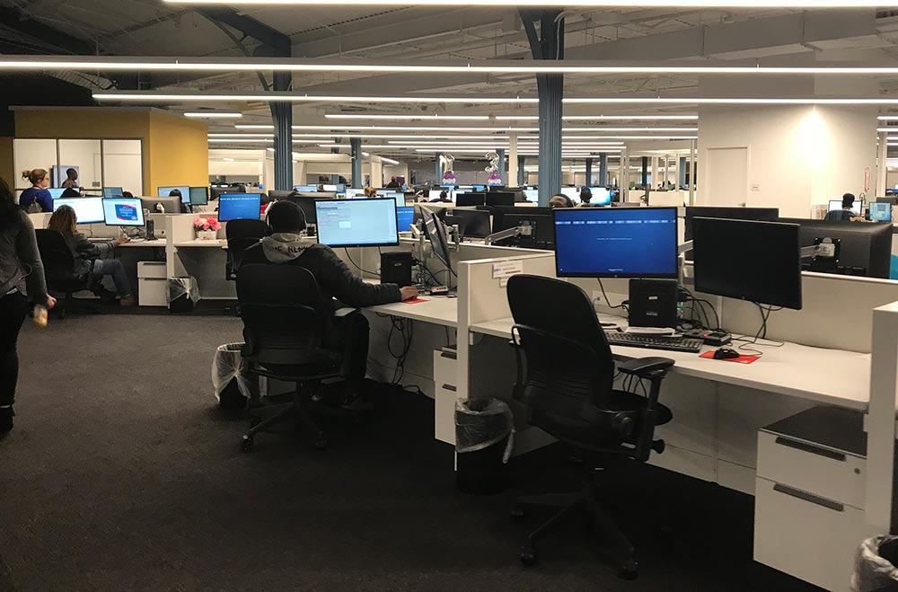
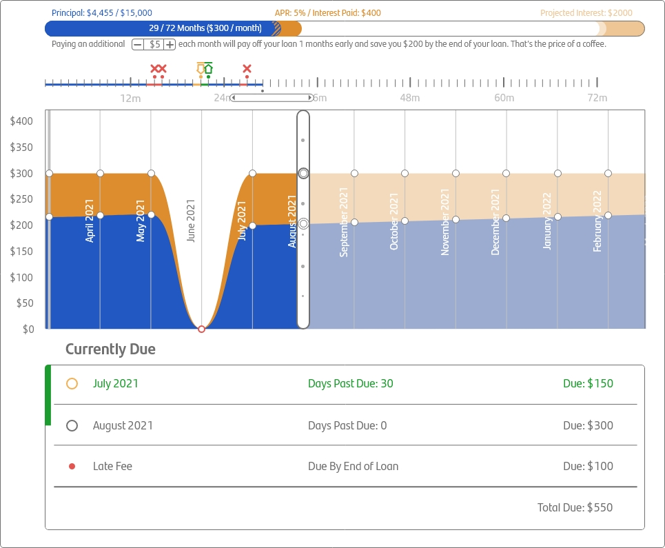
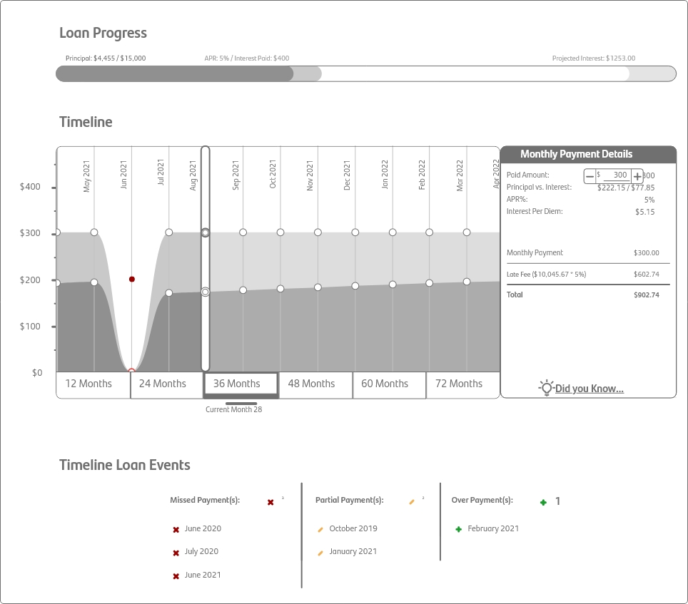

Loan Progress Simulator
(Santander Consumer USA)
Role: UX Designer in charge of leading research, development of a loan education tool
A tool to give Customer Service Agents and customers transparency into their loan payments. The goal for this project was to make a tool that would go beyond a basic loan calculator and give personalized information about how simple interest is calculated on a customer's loan.
Don't want to read? Watch the case study I created for our World Design Summit!
What is Simple Interest
Simple interest is how homes and car loans are calculated. Interest changes over the life of the loan based on how much of the principal is left. Daily interest, or per diem, can be calculated using this calculation:
Principal × (Interest Rate ÷ 365 ) = Daily Interest
How customers think simple interest works:
How simple interest actually works:
Customers get into trouble by thinking that the penalty for paying late is a late fee. Every day not paid adds extra interest and can lengthen the life of the loan. Side By Sides with Customer Service Agents
Side By Sides with Customer Service Agents
To better understand our customers, I sat with customer service agents and listened to their conversations with customers calling about their loans. After listening to 70 calls, I compiled my notes to create 3 personas.
Primary Persona: Early Stage Delinquency Customer
Early Stage customers are 5 to 60 days past due. These customers have often had either a medical emergency or a loss of employment that causes them to miss payments. Interest will continue to accrue through their time of difficulty, making it harder to get back on track.
Goals
- Wants to work towards getting back to current on their delinquent account
- Wants agent to be empathetic to customer's condition and help find a way out of current debt
- Wants to understand their loan structure and look under the hood
- Wants to make sure that money has successfully been paid towards account
- Often will want to make weekly payments to slowly catch up with their loan
Frustrations
- Thinks that there is only a fee for paying late, doesn't know that interest also accrues
- Will want to pay late fees on current payment, but late fees will roll into next month's payment
- Doesn't have the level of transparency into their loan as they might like
Secondary Persona: Proactive Customer
This customer always pays regularly and wants to better track the progress of their loan. Interested in any way that they may pay off early and/or reduce the amount of interest they pay on the loan overall.
Goals
- Ability to understand the intricacies of their loan online
- Staying current with payments
Frustrations
- Doesn't have a tool outside of calling customer service to find that information
Customer Service Agent
The Customer Service Representative fields all of the general calls for Santander and Chrysler Capital. The majority of calls are about payment questions.
Goals
- Answering between 7 and 12 calls per hour to field any questions from customers
- Tries to answer calls in 6 minutes or less
- Has to hit all areas of script before hanging up with customer
- 60% of calls are about payments, 20% of calls are about titles, 15% are about insurance, and 5% need to be escalated
Frustrations
- Customers think interest stays same throughout the life of the loan making them frustrated to learn how interest is actually calculated.
- Agents will have many windows open for different types of calls they may receive, cluttering their computer screen
First Prototype
Usability Test Results
Working with our UX researcher, we tested this wireframe with 6 customer service, early stage, and late stage collections agents.
- People didn't notice the draggable timeline and that it correlated to the window below
- Dragging the timeline was not intuitive
- People didn't realize that the icons were clickable for navigation
- People's instinct was to click on things rather than dragging them
Second Prototype
Usability Test Results
Testing with 5 new customer service, early stage, and late stage collections agents, key takeaways included:
- Dots were not obviously clickable
- Likewise, navigating the timeline with button clicks was unclear
- The script for early payoff was not worded like people expected it to be